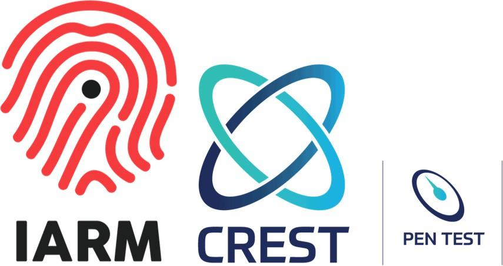
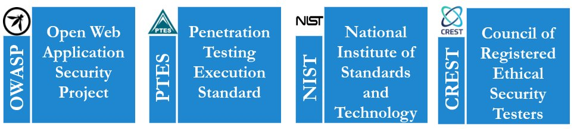
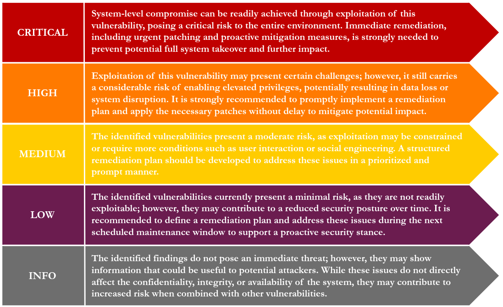

|
| ||||||||||||||||||||||||||||||||||||||||||||||||||||||||||||||||||||||||||||||||||||||||||||||||||||||||||||||||||||||||||||||
|
Page
| ||||||||||||||||||||||||||||||||||||||||||||||||||||||||||||||||||||||||||||||||||||||||||||||||||||||||||||||||||||||||||||||
1.0 Document ControlClient ConfidentialityThis document contains Client Confidential information and may not be copied without written permission. Document Version Control
Project Metadata
2.0 About Us IARM is a distinguished cyber security organization that provides an extensive array of cyber security assessment capabilities and services tailored to meet each client's specific needs. Whether it's developing a comprehensive cyber security strategy or implementing tailored solutions that align with an organization's size and requirements, IARM possesses the expertise, skills, and experience necessary to safeguard against potential threats and vulnerabilities effectively. IARM holds CREST accreditation for penetration testing services — a prestigious recognition of our dedication to delivering the highest levels of security testing. CREST is a globally respected authority known for its rigorous certification standards, and we are proud to have not only met but surpassed these stringent benchmarks. Country: USA | India | Singapore Website: https://www.iarminfo.com Email: info@iarminfo.com US: +1 5312422780 | India: 1800 102 1532 3.0 Engagement Summary3.1 Project OverviewThe organization {{ report.client_name }} enlisted IARM Information Security for a Vulnerability Assessment against their in-house developed {{ report.application_name or "Health Care Application" }} ({{ report.application_approach or report.assessment_type or "Application" }}) application. This report comprehensively outlines the vulnerabilities identified throughout the engagement, which commenced from {{ report.assessment_startdate | fmt_date }} to {{ report.assessment_enddate | fmt_date }}. Scope Centre
3.2 Goals
3.3 ApproachIARM Information Security Pvt. Ltd. conducted a Vulnerability Assessment covering selected in-scope assets, which may include firewalls, servers, desktops, laptops, and other network devices, as approved by the client. The assessment was performed using automated scanning techniques to identify potential vulnerabilities, misconfigurations, and exposed services across the identified systems. The objective was to provide a high-level overview of the security posture of the environment by detecting known vulnerabilities affecting the underlying infrastructure. The scanning activities were carried out in a controlled manner within the production environment, ensuring minimal impact on business operations. The assessment approach broadly included:
This approach provided a baseline understanding of the security risks associated with the assessed infrastructure components. 3.4 FrameworkIARM Information Security Pvt. Ltd.'s Vulnerability Assessment methodology is aligned with recognized industry standards and best practices. The approach is designed to ensure consistent, comprehensive, and systematic identification of known vulnerabilities across in-scope infrastructure components. The methodology is based on the following industry standards:  3.5 Reassessment GuidelinesA one-time retest is optional. The retest shall be performed on all identified vulnerabilities as a single consolidated exercise. 3.5.1 Out of Scope
3.5.2 Post Assessment Clean-upUpon completion of the Vulnerability Assessment, any access provided for the purpose of the assessment should be reviewed and revoked as appropriate. Additionally, any tools or temporary components used during the assessment should be removed, ensuring the environment is restored to its original state. 3.5.3 Severity Rating ScaleThe assessment team used defined criteria to evaluate and rate the findings identified during the engagement. Risk ratings are derived from the calculated IARM risk scoring methodology, which considers impact, exploitability, exposure, and overall business risk.  4.0 Executive Summary of Findings4.1 Vulnerability Assessment Risk ScoreFor each identified finding, IARM Information Security applies a structured IARM Risk Score methodology. This risk score evaluates multiple factors including the severity of the vulnerability, application exposure, user population impact, technical complexity of exploitation, and overall business risk. The objective of this scoring model is to provide a clear and consistent understanding of the risk posture associated with each vulnerability. For a detailed explanation of the IARM risk rating methodology and vulnerability categorization, please refer to the Risk Rating Scale (Section 3.5.3).
4.2 Risk Graph by Vulnerabilities5.0 Assessment ReportThe vulnerabilities below were identified and verified by IARM Information Security during this Penetration Testing engagement. {% set counters_det = namespace(c=0, h=0, m=0, l=0, i=0) %} {% for f in findings %} {% set lvl = f.cvss.level | lower %} {% if lvl == 'critical' %}{% set counters_det.c = counters_det.c + 1 %}{% set f_id = 'C' ~ counters_det.c %} {% elif lvl == 'high' %}{% set counters_det.h = counters_det.h + 1 %}{% set f_id = 'H' ~ counters_det.h %} {% elif lvl == 'medium' %}{% set counters_det.m = counters_det.m + 1 %}{% set f_id = 'M' ~ counters_det.m %} {% elif lvl == 'low' %}{% set counters_det.l = counters_det.l + 1 %}{% set f_id = 'L' ~ counters_det.l %} {% else %}{% set counters_det.i = counters_det.i + 1 %}{% set f_id = 'I' ~ counters_det.i %}{% endif %}5.{{ loop.index }} {{ f.title }} {{ f_id }}
Description:{{ f.description | md }}
{% endif %}
{% if f.cvss.score %}
CVSS Score:
{% if f.cvss.vector and f.cvss.vector.startswith('CVSS:3') %}
{{ f.cvss.score }} — {{ f.cvss.vector }}
{% else %}
{{ f.cvss.score }}{% if f.cvss.vector %} — {{ f.cvss.vector }}{% endif %}
{% endif %}
{% endif %}
{% if f.device_identifier or f.affected_hosts or f.affected_components %}
Affected Host:
Payload {% for p in f.payload %}
{% endif %}
{% if f.poc %}
{{ p }}{% endfor %}Proof of Concept {{ f.poc }}
{% endif %}
{% if f.evidence_images %}
Evidence / Screenshots
{% for img in f.evidence_images %}
{% endif %}
{% if f.recommendation %}
Recommendation {{ f.recommendation | md }}
{% endif %}
{% if f.references %}
References
6.0 ConclusionWithin the given time frame the Assessment exercise was conducted at the mentioned premises. IARM highly recommends fixing the identified vulnerabilities and plan for reassessment within 60 days. The remedial measures as suggested by the Vulnerability Assessment “as-is basis” of the current infrastructure. Information Security is not just an on-time effort, but also an ongoing activity to identify risks and mitigate them. We highly recommend doing Vulnerability Assessment quarterly across the organization. The effort to identify Information security threats and associated breach is an enormous exercise and it must be put into practice as a framework within the organization. Information Security is not only “Information Technology” responsibility, but rather everybody's contribution. Ultimate ownership of Information Security is with the Business. 7.0 Appendix7.1 Checklist Overview
|